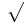
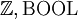
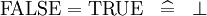
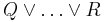
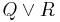
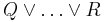
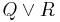
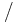

The Proving Perspective (Rodin User Manual)
From Event-B
|
The Proving Perspective is made of a number of windows: the proof tree, the goal, the selected hypotheses, the proof control, the proof information, and the searched hypotheses. In subsequent sections, we study these windows, but before that let us see how one can load a proof.
Loading a Proof
In order to load a proof, enter the Proof Obligation window, select the project, select and expand the component, finally select the proof obligation: the corresponding proof will be loaded. As a consequence:
- the proof tree is loaded in the Proof Tree window. As we shall see in section 6.2, each node of the proof tree is associated with a sequent.
- In case the proof tree has some "pending" nodes (whose sequents are not discharged yet) then the sequent corresponding to the first pending node is decomposed: its goal is loaded in the Goal window (section 6.3), whereas parts of its hypotheses (the "selected" ones) are loaded in the Selected Hypotheses window (section 6.3).
- In case the proof tree has no pending node, then the sequent of the root node is loaded as explained previously.
The Proof Tree
Description of the Proof Tree
The proof tree can be seen in the corresponding window as shown in the following screen shot:
{kind=link}
Each line in the proof tree corresponds to a node which is a sequent. A line is right shifted when the corresponding node is a direct descendant of the node of the previous line. Here is an illustration of the previous tree:
{kind=link}
Each node is labelled with a comment explaining how it can be discharged. By selecting a node in the proof tree, the corresponding sequent is decomposed and loaded in the Goal and Selected Hypotheses windows as explained in section 6.1.
Decoration
The leaves of the tree are decorated with three kinds of logos:
- a green logo with a "" in it means that this leaf is discharged,
- a red logo with a "?" in it means that this leaf is not discharged,
- a blue logo with a "R" in it means that this leaf has been reviewed.
Internal nodes in the proof tree are decorated in the same (but lighter) way. Note that a "reviewed" leaf is one that is not discharged yet by the prover. Instead, it has been "seen" by the user who decided to have it discharged later. Marking nodes as "reviewed" is very convenient in order to perform an interactive proof in a gradual fashion. In order to discharge a "reviewed" node, select it and prune the tree at that node (section 6.2.5): the node will become "red" again (undischarged) and you can now try to discharge it.
Navigation within the Proof Tree
On top of the proof tree window one can see three buttons:
- the "G" buttons allows you to see the goal of the sequent corresponding to the node
- the "+" button allows you to fully expand the proof tree
- the "-" allows you to fully collapse the tree: only the root stays visible.
Hiding
The little triangle next to each node in the proof tree allows you to expand or collapse the subtree starting at that node.
Pruning
The proof tree can be pruned from a node: it means that the subtree starting at that node is eliminated. The node in question becomes a leaf and is red decorated. This allows you to resume the proof from that node. After selecting a sequent in the proof tree, pruning can be performed in two ways:
- by right-clicking and then selecting "Prune",
- by pressing the "Scissors" button in the proof control window (section 6.4).
Note that after pruning, the post-tactic (section 6.8) is not applied to the new current sequent: if needed you have to press the "post-tactic" button in the Proof Control window (section 6.4). This happens in particular when you want to redo a proof from the beginning: you prune the proof tree from the root node and then you have to press the "post-tactic" button in order to be in exactly the same situation as the one delivered automatically initially.
When you want to redo a proof from a certain node, it might be advisable to do it after copying the tree so that in case your new proof fails you can still resume the previous situation by pasting the copied version (see next section).
Copy/Paste
By selecting a node in the proof tree and then clicking on the right key of the mouse, you can copy the part of the proof tree starting at that sequent: it can later be pasted in the same way. This allows you to reuse part of a proof tree in the same (or even another) proof.
Goal and Selected Hypotheses
The "Goal" and "Selected Hypotheses" windows display the current sequent you have to prove at a given moment in the proof. Here is an example:
{kind=link}
A selected hypothesis can be deselected by first clicking in the box situated next to it (you can click on several boxes) and then by pressing the red (-) button at the top of the selected hypothesis window:
{kind=link}
Here is the result:
{kind=link}
Notice that the deselected hypotheses are not lost: you can get them back by means of the Searched Hypotheses window (section 6.7).
The three other buttons next to the red (-) button allow you to do the reverse operation, namely keeping some hypotheses. The (ct) button next to the goal allows you to do a proof by contradiction: pressing it makes the negation of the goal being a selected hypothesis whereas the goal becomes "false". The (ct) button next to a selected hypothesis allows you to do another kind of proof by contradiction: pressing it makes the negation of the hypothesis the goal whereas the negated goal becomes an hypothesis.
Rewrite Rules
Rewrite rules are applied either automatically (A) or manually (M).
A rule may be applied:
- Automatically (A), when post tactics are enabled. These rules are equivalence simplification laws.
- Manually (M), through an interactive command. These rules gathers non equivalence laws, definition laws, distributivity laws and derived laws.
Rewrite rules are applied from left to right either in the goal or in the selected hypotheses, when their side condition hold.
Each rule is named after the following elements:
- The law category: simplification law (SIMP), definition law (DEF), distributivity law (DISTRI), or else derived law (DERIV).
- Particularity on terminal elements of the left part of the rule (optional): special element (SPECIAL) such as the empty-set, type expression (TYPE), same element occurring more then once (MULTI), literal (LIT). A type expression is either a basic type (, any carrier set), or
 (type expression), or type expression
(type expression), or type expression type expression.
type expression.
- One or more elements describing from top to down the left part of the rule, eg. predicate AND, expression BUNION.
- Detail to localize those elements (optional): left (L), right (R).
Rewrite rules having an equivalence operator in their left part may also describe other rules. eg: the rule:
should also produce the rule:

For associative operators in connection with distributive laws as in:
it has been decided to put the "button" on the first associative/commutative operator (here  ). Pressing that button will generate a menu: the first option of this menu will be to distribute all associative/commutative operators, the second option will be to distribute only the first associative/commutative operator. In the following presentation, to simplify matters, we write associative/commutative operators with two parameters only, but it must always be understood implicitly that we have a sequence of them. For instance, we shall never write  but  instead. Rules are sorted according to their purpose.
). Pressing that button will generate a menu: the first option of this menu will be to distribute all associative/commutative operators, the second option will be to distribute only the first associative/commutative operator. In the following presentation, to simplify matters, we write associative/commutative operators with two parameters only, but it must always be understood implicitly that we have a sequence of them. For instance, we shall never write  but  instead. Rules are sorted according to their purpose.
Rules marked with a star in the first column are implemented in the current prover. Rules without a star are planned for implementation.
Rewrite rules are split into:
They are also available in a single large page All Rewrite Rules.
Inference Rules
Inference rules are applied either automatically (A) or manually (M).
Inference rules applied automatically are applied at the end of each proof step when the post-tactic is enabled. They have the following possible effects:
- they discharge the goal,
- they simplify the goal and add a selected hypothesis,
- they simplify the goal by decomposing it into several simpler goals,
- they simplify a selected hypothesis,
- they simplify a selected hypothesis by decomposing it into several simpler selected hypotheses.
Inference rules applied manually are used to perform an interactive proof. They can be invoked by pressing "buttons" which corresponds to emphasized (red) operators in the goal or the hypotheses. A menu is proposed when there are several options.
See the Inference Rules list.
The Proof Control Window
The Proof Control window contains the buttons which you can use to perform an interactive proof. Next is a screen shot where you can see successively from top to bottom:
- some selected hypotheses,
- the goal,
- the "Proof Control" window,
- a small editing area within which you can enter parameters used by some buttons of the Proof Control window
- the smiley (section 6.5)
{kind=link}
The Proof Control window offers a number of buttons which we succinctly describe from left to right:
- (p0): the prover PP attempts to prove the goal (other cases in the list)
- (R) review: In an attempt by the user to carry out proofs in a gradual fashion, they might decide to postpone the task of discharging some interactive proofs for a later stage. In this case they have the possibility to mark these proofs as reviewed (by choosing the proof node and pressing the blue button with a “R” letter on the top-left corner of the Proof Control view). This means that by visually checking this proof, the user convinced that they can discharge it later but they do not want to do it right now.
- (dc) proof by cases: the goal is proved first under the predicate written in the editing area and then under its negation,
- (ah) lemma: the predicate in the editing area is proved and then added as a new selected hypothesis,
- (ae) abstract expression: the expression in the editing area is given a fresh name,
- the auto-prover attempts to discharge the goal. The auto-prover is the one which is applied automatically on all proof obligations (as generated automatically by the proof obligation generator after a "save") without any intervention of the user. With this button, you can call yourself the auto-prover within an interactive proof.
- the post-tactic is executed (see section 6.8),
- lasso: load in the Selected Hypotheses window those unseen hypotheses containing identifiers which are common with identifiers in the goal and selected hypotheses,
- backtrack form the current node (i.e., prune its parent),
- scissors: prune the proof tree from the node selected in the proof tree,
- show (in the Search Hypotheses window) hypotheses containing the character string as in the editing area,
- Cache Hypotheses Button: By pressing "Cache Hypotheses" button the tool displays the "Cache Hypotheses" view. This view displays all hypotheses that are related to the current goal. Some of these hypotheses might not been chosen as current active hypotheses (this is the set of hypotheses that considered by the prover to discharge the current goal). By opening the cached hypotheses view the user can manually select and add some of them to the current active hypotheses view.
- load the previous non-discharged proof obligation,
- load the next undischarged proof obligation,
- (i) show information corresponding to the current proof obligation in the corresponding window. This information correspond to the elements that took directly part in the proof obligation generation (events, invariant, etc.),
- goto the next pending node of the current proof tree,
- load the next reviewed node of the current proof tree.
The Smiley
The smiley can take three different colors: (1) red, meaning that the proof tree contains one or more non-discharged sequents, (2) blue, meaning that all non-discharged sequents of the proof tree have been reviewed, (3) green, meaning that all sequents of the proof tree are discharged.
The Operator "Buttons"
In the goal and in the selected, searched, or cache hypotheses some operators are colored in red. It means that they are "buttons" you can press. When doing so, the meaning (sometimes several) is shown in a menu where you can select various options. The operation performed by these options is described in sections 6.9.1 and 6.9.2.
The Search Hypotheses Window
By typing a string in the Proof Control window and pressing the Search Hypotheses button a window is provided which contains the hypotheses having a character string in common with the one entered by the user in the editing area. For example, if we search for hypotheses involving the character string "cr", then after pressing the Search Hypothesis button on the proof control window, we obtain the following:
{kind=link}
This view also integrates a "quick search" area (A), that allows us to search quickly hypothesis involving short character strings such as "cr". A search hypothesis button (B) that behaves the same as the button of the proving window, a refresh button (C) that updates the window manually for more control, and a drop down menu (D) to set the preferences of the view up.
By pressing return key or the button (B) (once a short string has been given in the input area (A)), hypotheses can be searched quickly as if we used the Proof Control as described before.
The drop down menu (D) is accessible to set some preferences over the searched hypotheses :
{kind=link}
If we change preferences for the search, we might need to "update" manually the view with the button (C). By selecting "Consider hidden hypotheses in search" option, we can review all hypotheses that have been unselected in the selected hypotheses window(more info about selected/hidden hypotheses...).
In the next step any of these hypotheses can be selected and then by pressing the (+)button they will be moved to the Selected Hypotheses window . Adding these hypotheses to the set Selected Hypotheses means that they will be visible to the prover. This means that they can be used during the next interactive proof phase. Accordingly by selecting any numbers of hypotheses and pressing the (-)button they will be removed from the Search Hypotheses window. The (-)button also appears above the selected hypotheses, and allow the user to remove any hypothesis form the Selected Hypotheses window. The other button which is situated in the left-hand-side of all hypotheses is the (ct) Button. By pressing the (ct) Button the negation of the corresponding hypothesis is taken as a new hypothesis. For this purpose we have to prove it first and therefore it appears as a new goal which the user must discharge it first and then proceed with the previous goal.
The Automatic Post-tactic
In this section, we present the various rewrite or inference rules which are applied automatically as a systematic post-tactic after each proof step. Note that the post-tactic can be disabled by using the "P" button situated on the right of the proof control window.
The post-tactic is made of two different rules: rewrite rules, which are applied on any sub-formula of the goal or selected hypotheses (section 6.8.1) and inference rules which are applied on the current sequent (section 6.8.2).
Preferences for the Post-tactic
The post-tactic can be configured by means of a preference page which can be obtained as follows: press the "Window" button on the top tooolbar. On the coming menu, press the "Preferences" button. On the coming menu, press the "Event-B" menue, then the "Sequent Prover’, and finally the "Post-Tactic" button. This yilds the following window:
{kind=link}
In the left part you can see the ordered sequence of individual tactics composing the post-tactic, whereas the right part contains further tactics you can incorporate in the left part. By selecting a tactic you can move it from on part to the other or change the order in the left part.